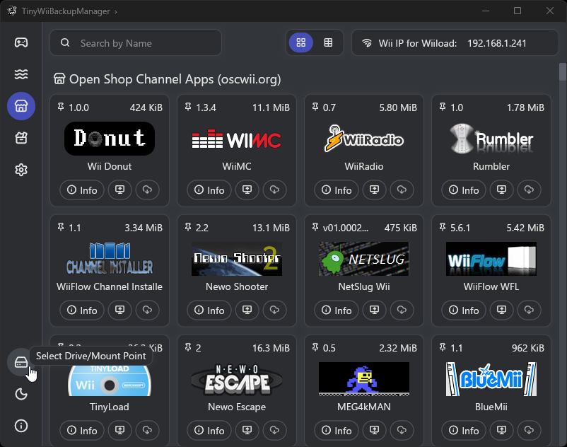
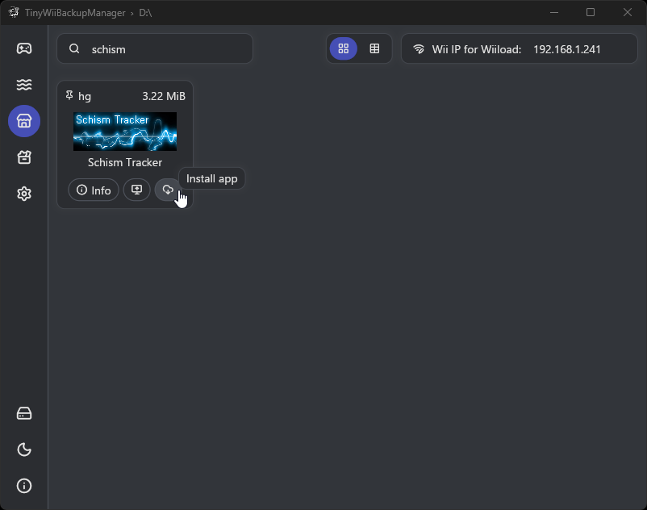
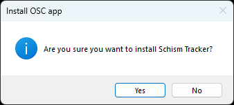

Open Shop Channel
TIP
End of Required Section
This marks the end of the required section of the main guide. You do not have to follow the guide from this point onward if you would like a standard, functioning homebrew setup.
Going forward, the remainder of the guide will show the following to get the most out of your Wii:
- Utilizing the Open Shop Channel to obtain homebrew applications
- Restoring WiiConnect24 functionality with WiiLink
- Restoring the ability to play online with Wiimmfi
- Providing a list of recommended homebrew to try out
INFO
오픈 샵 채널에 대한 지원 (영어)을 원하시면 디스코드의 오픈 샵 채널에 가입합니다.
오픈 샵 채널은 dhtdht020이 만든 홈브류 앱 저장소이며 현재 홈브류를 다운로드하는 가장 선호되는 방법입니다.
There are two methods to use the Open Shop Channel:
- On the Wii itself, utilizing one of the following homebrew apps:
- LibreShop (preferred)
- Homebrew Browser (fallback)
- On your computer, utilizing one of the following applications:
- TinyWiiBackupManager (preferred)
- OSCDL (fallback)
Method I - Open Shop Channel on Wii
LibreShop
LibreShop is a text-based app repository coded from the ground up by the LibreShop team, serving as a modern and more reliable method to download homebrew on a Wii.
요구 사항
- A Wii with an active Internet connection
- SD 카드 및 USB 드라이브
- LibreShop
Usage Instructions
오픈 샵 채널 웹사이트에서 추천하는
.zip파일을 다운로드합니다.
보관 파일의
apps폴더를 SD 카드나 USB 드라이브의 루트에 압축 해제합니다.Insert your SD card or USB drive into your Wii, and go to LibreShop. LibreShop should now display.

Homebrew Browser
The Homebrew Browser is a graphical-based app repository for the Wii originally released in June 2008, but patched by the Open Shop Channel team to support its servers. It can be unstable, but serves as an alternative to LibreShop should the former not be usable.
요구 사항
- A Wii with an active Internet connection
- SD 카드 및 USB 드라이브
- 홈브류 브라우저
Usage Instructions
오픈 샵 채널 웹사이트에서 추천하는
.zip파일을 다운로드합니다.
보관 파일의
apps폴더를 SD 카드나 USB 드라이브의 루트에 압축 해제합니다. 선택적으로, 보관소에는 홈브류 브라우저를 사용하는 방법에 대한 가이드도 제공됩니다.SD 카드나 USB 드라이브를 Wii에 연결하고 홈브류 채널로 이동합니다. 이제 홈브류 브라우저로가 표시될 것입니다.

Method II - Open Shop Channel on PC
TinyWiiBackupManager
TinyWiiBackupManager comes with a built-in app downloader for Open Shop Channel homebrew applications, and is the preferred method to download OSC apps on PC for most users due to its simplicity.
요구 사항
- A Windows/macOS/Linux computer with an Internet connection
- SD 카드 및 USB 드라이브
- The latest version of TinyWiiBackupManager
섹션 I - 설치
Detailed installation instructions for TinyWiiBackupManager specific to your operating system can be found on the Managing Backups page. Once finished, proceed for instructions on using the application for the Open Shop Channel.
Section II - Usage
USB 드라이브 또는 SD 카드를 컴퓨터에 연결하세요.
Click the hard drive icon on the bottom left of the app to select your drive. Select the root of the drive (e.g.
E:\), not the "wbfs" or "games" folder. If you have not already done so, click the shop icon to open the Open Shop Channel frontend.
Find an application that you would like to obtain, and press the
Install appbutton. 혹은, 앱을 Wii로 직접 보낼 수도 있습니다. (이렇게 하려면 컴퓨터와 Wii가 동일한 네트워크에 있어야 함)
A dialog box will pop-up asking you if you would like to install the application. Press
Yes. Once the installation has finished, a message will appear in the bottom right of the application indicating that the app was installed.
SD 카드나 USB 드라이브를 Wii에 연결하고 홈브류 채널로 이동합니다. 이제 다운로드한 홈브류가 표시될 것입니다.
OSCDL
OSCDL is the application officially developed by the Open Shop Channel team for usage on PC, and may appeal to power users due to its additional features. It can be used as an alternative to TinyWiiBackupManager in cases where the former will not function.
요구 사항
- A Windows/macOS/Linux computer with an Internet connection
- SD 카드 및 USB 드라이브
- OSCDL의 최신 버전
윈도우
섹션 I - 설치
INFO
마이크로소프트 스마트스크린 창이 나타날 수 있습니다. 이는 긍정 오류이므로, 무시하고 실행합니다.
INFO
프로그램이 PC에 변경 사항을 적용할지 여부를 묻는 사용자 계정 컨트롤 팝업이 나타나면 예를 선택합니다. 오픈 샵 채널은 안전한 응용 프로그램입니다.
oscdl-installer.exe를 다운로드하고 설치 프로그램을 실행합니다. 선택적으로, 설치할 필요가 없고 휴대용 실행 파일로 실행되는oscdl-standalone.exe를 다운로드할 수 있습니다.
설치 프로그램을 실행한 후, 프로세스가 완료되면 OSCDL을 시작합니다.

Section II - Usage
Find an application that you would like to obtain, and press the Download button. 혹은, 앱을 Wii로 직접 보낼 수도 있습니다. (이렇게 하려면 컴퓨터와 Wii가 동일한 네트워크에 있어야 함)

직접 다운로드하는 경우 다운로드 위치를 묻는 대화 상자가 나타납니다. OSCDL will prompt you if it detects a storage device with an apps folder, and if downloaded there, it will automatically unzip the homebrew and be ready to use. 그렇지 않은 경우, 수동 다운로드 위치를 지정하여 직접 압축 해제 할 수도 있습니다.

SD 카드나 USB 드라이브를 Wii에 연결하고 홈브류 채널로 이동합니다. 이제 다운로드한 홈브류가 표시될 것입니다.
macOS and Linux
섹션 I - 설치
WARNING
이러한 플랫폼에서 OSCDL을 사용하려면 파이선 3을 설치해야 합니다. Please note that on certain distros, Python 3 may use either python or python3 as an alias, please be aware of this for Step 6. You will also create a virtual environment to isolate OSCDL and its dependencies from your base Python installation.
이러한 플랫폼에서 OSCDL을 사용하려면 파이선 3을 설치해야 합니다. Optionally, you can instead run
git clone https://github.com/dhtdht020/osc-dl.gitin the directory you would like to use OSCDL in..zip또는.tar.gz형식의 OSCDL 소스 코드를 다운로드합니다.If you chose to download the source code, extract the archive to a location on your computer that you would like to use OSCDL in.
Open the location of the extracted files in a terminal and run the command
python3 -m venv venvto create a virtual environment. Note that, if you receive a message thatensurepipis not available, you must install thepython3-venvpackage for your distribution. Python may provide a command for you to use to accomplish this.
Run the command
source venv/bin/activateto activate the virtual environment.
Run the command
pip install -r requirements.txt. 이렇게 하면 OSCDL을 실행하는 데 필요한 Python 패키지가 다운로드됩니다.
python3 oscdl.py명령을 실행합니다. 그러면 프로그램이 열립니다. If you choose to keep the terminal open, you can usedeactivateto exit the virtual environment. Additionally note that you must runsource venv/bin/activatein the directory where OSCDL was extracted every time you open a new terminal. This is in order to load the dependencies needed to run OSCDL.
Section II - Usage
Once OSCDL is open, find an application that you would like to obtain, and press the Download button. 혹은, 앱을 Wii로 직접 보낼 수도 있습니다. (이렇게 하려면 컴퓨터와 Wii가 동일한 네트워크에 있어야 함)

직접 다운로드하는 경우 다운로드 위치를 묻는 대화 상자가 나타납니다. OSCDL will prompt you if it detects a storage device with an apps folder, and if downloaded there, it will automatically unzip the homebrew and be ready to use. 그렇지 않은 경우, 수동 다운로드 위치를 지정하여 직접 압축 해제 할 수도 있습니다.

SD 카드나 USB 드라이브를 Wii에 연결하고 홈브류 채널로 이동합니다. 이제 다운로드한 홈브류가 표시될 것입니다.
TIP
WiiConnect24 was an online service ran by Nintendo, providing functionality to apps such as the Forecast and News channels. This guide outlines WiiLink, a service that restores this functionality, as well as other information to be aware of when using it.